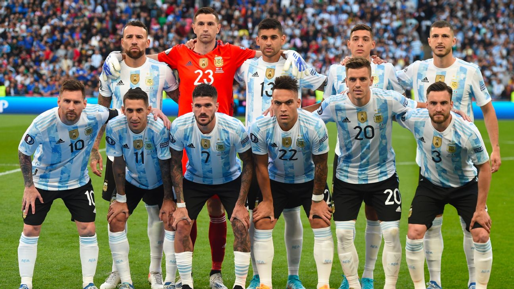

ARGENTINA
La selección masculina de fútbol de Argentina es el equipo formado por jugadores de nacionalidad argentina que representa a la Asociación del Fútbol Argentino (AFA) en las competiciones oficiales organizadas por la Confederación Sudamericana de Fútbol (Conmebol), ente rector de ese deporte en América del Sur, y por la Federación Internacional de Fútbol Asociación (FIFA). Es campeona vigente a nivel confederativo, interconfederativo y mundial.
